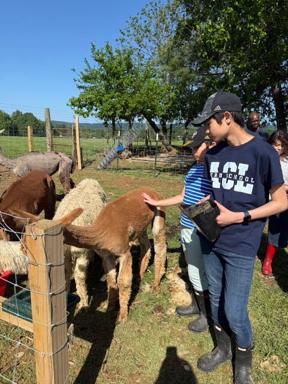

Seiji and Shinji are the creators of this website. We are 4H Alpaca and Llama Club members. In the Alpaca and Llama Club, we have monthly meetings where we discuss our activities report and have team building activities. We have Herd Health every month to take care of alpacas at our host farm, Mountain View Homestead. Farmer Alex and Ashley teach us how to take care of alpacas. We do things like giving vaccinations, feeding, and nail trimming. We also have alpaca shearing once a year! We have other activities, too, such as visiting the Marion duPont Scott Equine Medical Center and Virginia Tech! We have a lot of fun in our club and hope to see many new members join us!
